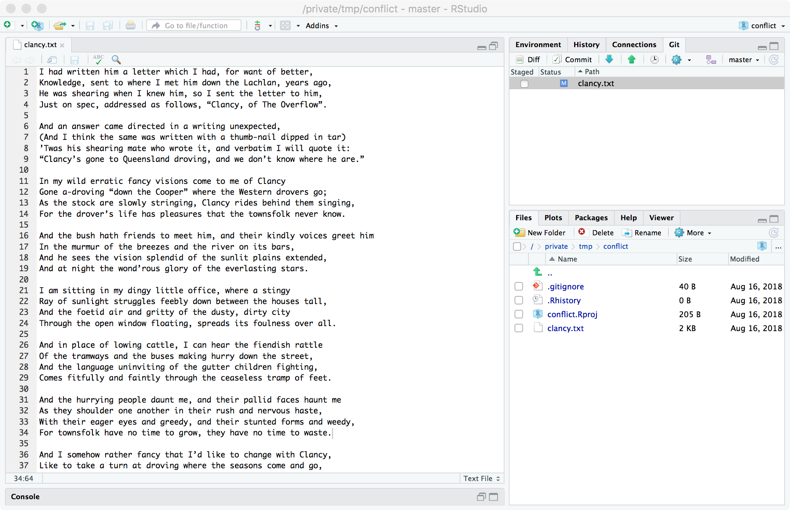

Overview
This tutorial looks at resolving conflicts in git.
Conflicts arise when changes are made by different commits which git cannot reconcile automatically. User intervention is required to make sense of the intent of the changes by manually reconciling changes.
© Copyright 2018, 2021 UNSW Sydney. All rights reserved except where otherwise stated.
The edit \(\leftrightarrow\) commit cycle.
Let's remind ourselves of the git edit cycle:

In this cycle it is possible that when we ask for an update concerning changes other people have made independently of our changes we might find that they have done something different to a section of a file that we also changed. When this happens git will ask us to fix it and then we will need to communicate the fix back to everyone else.

Fixing these conflicts is just like any other edit operation: the aim is to leave the project in a consistent sensible state.
Conflicts
When multiple copies of a project are worked on concurrently:
- by multiple users with their own copies
- by a single user with multiple copies
a situation can arise where different changes are made to the same section of a file.
Generally, git can handle the following concurrent edit scenarios:
- changes to different 'non-overlapping' sections of files
- identical changes to the same section of a file
- changes to one section of a file by one user where no change has
been made to that section by other users
- this is really a special case of scenario (1)
Tracking the locations of change
An aside...
We shall be discussing and examining example of conflicts in text files which are tracked on a line-by-line basis by git. Non-text files such as images or compressed file and so on are not handled line-by-line when it comes to conflicts. Git stores binary file and changes to those files in an efficient manner but since it is hard to show changes to a binary file in a sensible way, resolving conflicts on binary files is generally an all-or-nothing affair: the entirety of one or the other of two conflicting versions (or a completely new version) is chosen.
Git tracks the location of changes, not by line number (which can change when edits are made in prior sections of a file) but by context.
You may have noticed when looking at diffs and logs of commit changes that a few lines either side of a change are usually presented along with the change. This is how git locates where to apply a change to a file even when text within the file moves around. Think of them as anchor points for the changes to be applied.
Git has trouble applying a change if:
- one or both of the anchor contexts have disappeared
- two different changes have been made to the text between the start and end contexts
When this happens git will alert us to the conflict and ask for it to be resolved.
In order for such conflicts to always be noticed, git does not allow a push to a remote repository when the local repository is out-of-date, i.e. when the remote repository has 'more changes in it' than the local repository. (That's a bit hand-wavy but it will do for now.)
When this happens, git requires a pull be made before the push can occur. When the pull is made, conflicts will be detected and can (and must) be fixed. (If a push were allowed to the remote repository, conflicts could build up remotely and never get fixed; a user would one day do a pull and find 100 conflicts waiting to be fixed!)
Identifying conflicts
Conflicts are indicated in the text using marker character strings:
<<<<<<<marks the beginning of the area that needs fixing=======separates the two different versions, and>>>>>>>marks the end of the area that needs fixing
<<<<<<< HEAD
my changes
=======
pulled changes
>>>>>>> be2b0441bebfb70c6eef9827678bbb12f149bf4dThe aim is to replace the entire section with the 'correct' version. What is 'correct' is entirely up to you.
- You might decide your changes are better than the remote changes you're pulling in so you delete the markers and the second chunk of text
- You might decide that the remote changes are better and your changes are unwanted so you keep the second chunk and delete the first
- You might need to incorporate changes from both, replacing the entire section
- You might come up with a completely new replacement that is nothing like either of them
- You might decide to delete both changes altogether
There is no single right answer.
To resolve the conflict, edit, add and commit as usual.
Note that there may be more than one set of conflicts in a file. Make
sure you get them all by searching for
<<<<<<< markers until none are
left.
It is very important not to just check the check box when conflicts happen and blindly commit.
Neglecting to fix the conflicts will lead to the
<<<<<<<, ======= and
>>>>>>> markers and the different
versions of the text getting committed. This will in turn lead to more
conflicts down the track with nested marks and not-so-hilarious results.
Your colleagues will not thank you.
Because git keeps track of all the different versions, nothing is irreparable if you do this, everything can be fixed as we have a full history of all our files. Fixing a single accidentally-committed conflict is relatively easy. Fixing nested conflicts gets messy and confusing very fast so if you accidentally do this, fix it as soon as possible.
Resolving conflicts
We're going to step through the process of resolving a conflict.
- One user is going to enter some text (Clancy of the Overflow) omitting a few verses and commit it locally
- This first user is going to push the result to a remote repository
- A second user is going to clone this project and add some (but not all) of the verses and provide a verse which is not the original text
- The second user will commit these changes (locally) and push the result back to the remote repository
- Without pulling the first user notices the missing verses and adds them back in and commits them (locally)
- The first user now tries to push and is told the local repository is out-of-date
- The first user pulls to get pending remote changes
- At this point a conflict is discovered
- The first user will fix the conflict, commit the changes and push the reconciled version of the changes
- At some later point the second user will pull and get the reconciled version
- Both users will then have the same changes (and history of changes) in their repositories
User 1: A new project
For the purposes of this tutorial we will create a new project and push it to GitHub.
There are several ways of working on a project under git's control:
- clone an existing project on GitHub locally
- create a new project on GitHub and then clone it locally
- bring an existing project under the control of git and push it into an empty project on GitHub
- create a new empty project locally and push it into an empty project on GitHub
We shall be doing the last, so we select File >> New Project... from the menus in RStudio, choose New Directory in the window that pops up, choose New Project for the Project Type, and then fill in the location where we want to create the project making sure we tick the Create a git repository check box.
In the new project (which we have called conflict) we
create a new text file called clancy.txt and enter the text
of the poem Clancy of the Overflow, by Banjo Patterson.
I had written him a letter which I had, for want of better,
Knowledge, sent to where I met him down the Lachlan, years ago,
He was shearing when I knew him, so I sent the letter to him,
Just on spec, addressed as follows, “Clancy, of The Overflow”.And an answer came directed in a writing unexpected,
(And I think the same was written with a thumb-nail dipped in tar)
’Twas his shearing mate who wrote it, and verbatim I will quote it:
“Clancy’s gone to Queensland droving, and we don’t know where he are.”In my wild erratic fancy visions come to me of Clancy
Gone a-droving “down the Cooper” where the Western drovers go;
As the stock are slowly stringing, Clancy rides behind them singing,
For the drover’s life has pleasures that the townsfolk never know.And the bush hath friends to meet him, and their kindly voices greet him
In the murmur of the breezes and the river on its bars,
And he sees the vision splendid of the sunlit plains extended,
And at night the wond’rous glory of the everlasting stars.I am sitting in my dingy little office, where a stingy
Ray of sunlight struggles feebly down between the houses tall,
And the foetid air and gritty of the dusty, dirty city
Through the open window floating, spreads its foulness over all.And in place of lowing cattle, I can hear the fiendish rattle
Of the tramways and the buses making hurry down the street,
And the language uninviting of the gutter children fighting,
Comes fitfully and faintly through the ceaseless tramp of feet.And the hurrying people daunt me, and their pallid faces haunt me
As they shoulder one another in their rush and nervous haste,
With their eager eyes and greedy, and their stunted forms and weedy,
For townsfolk have no time to grow, they have no time to waste.And I somehow rather fancy that I’d like to change with Clancy,
Like to take a turn at droving where the seasons come and go,
While he faced the round eternal of the cash-book and the journal —
But I doubt he'd suit the office, Clancy, of The Overflow.
However, we will leave out the second, fourth and sixth verses.

Notice at this point we have saved our new text file but we have not
added or committed any files to git's care (as shown by the
? in the Status column of the git
pane).
User 1: The initial commit
Let's commit all the files of our new project, making sure to tick the Staged box to add them.
Here is our project with a sensible commit message just before we press the Commit button:
And here it is just after, showing git's output as it performs the commit:
It will be instructive to look at the git history of the project at this point and see the state of the world as git sees it locally:
We have only made one commit and where we are working (the
green cartouche with HEAD in it) is at that commit,
i.e. we're working at the most up-to-date place git
can be.
Under the bonnet...
We can see a lot of information in this pane:
- there is only one commit (
dec2beac) so far (because there is only one line) - in this commit we added a bunch of files
- it was done on 16/8/2018 at 06:59 UTC by James Farrow
- the
HEAD(where we're working) is at the tip of themasterbranch (the main line of development) - this commit according to the commit message was
Initial commit. Clancy of the Overflow missing verses 2, 4 and 6.(this is why we choose sensible and descriptive commit messages).
User 1: Pushing upstream
So far with git we have been adding and committing files to
a local repository. A repository is a place where git
keeps all the information it knows about files and changes. The local
repository is kept in the .git directory in the top
directory/folder of our project. You should
never touch anything in this folder directly unless you know
exactly what you are doing.
We can have a remote repository which we can push
changes to and pull changes from. Conventionally this remote
repository is called the origin and is referred to as being
'upstream' from our local repository.
- we push changes upstream from our local repository to the
origin - we pull changes from the
originto our local repository
The remote repository might have already been in existence (either
empty or with files in it) and we cloned it locally to begin work. This
process usually sets up our master branch to track changes
in the remote origin/master branch automatically,
i.e. when we push we push changes from our
master to the master branch of the
origin and when we pull we pull any changes we
don't have yet in our master from the master
branch of the origin.
Under the bonnet...
A pull is actually two operations:
- a fetch from the branch on the
originserver to a local copy of that remote branch - a merge of the local copy of the remote branch to the local working branch
It's usually convenient to use pull to do these operations together.
In our case we are going to take our existing local repository (the one we have just created) and push it into an empty remote repository on GitHub.
First, let's create a new repository on GitHub. We're going
to call it conflict because we're going to use it to
demonstrate edit conflicts.
GitHub informs us of several ways we can populate our new remote repository
- we can create a new (local) repository and associate it with the remote repository
- we can push an existing (local) repository to the remote repository
- we can import code from another kind of repository
Since we already have a repository we're going to follow the second suggestion.

We will associate the GitHub remote repository with our
local repository by setting it as the origin and then we
will push the local repository to the remote repository.
Unfortunately, RStudio has no facilities for setting the
origin directly. It would do this for us if we open a new
project by cloning a project from GitHub but for our case we
will need to open a shell and issue a few git commands to
effect the setup.
To do this in Rstudio we'll use the drop-down menu accessed via the cog icon in the git pane and select Shell....
Notice at this point in the RStudio UI the push and
pull icons (up and down arrows) on the git tab are
inactive. This is because at this point there is no upstream
origin repository associated with the local repository.
We're about to change that.
We open the shell and run two commands:
- set the upstream
originto be the GitHub repository - push the local repository to the
origin
This has the side-effect of setting up our local master
branch to track the remote origin/master branch (which is
what we want).
Now the push and pull icons (up and down arrows) on the git tab are active.

In our commit history we can see that we have a new piece of information. Previously the commit history only had the status of our local repository in it as we saw:
Now, after adding an origin and performing our push we
have some new information in the history: information about the status
of the origin repository.
An aside...
It's important to draw the distinction that this is
not a statement about the current status of
the origin server. It is a statement about the local
repository's knowledge of the origin server. These two things can
be quite different as the local repository only updates its knowledge
about the remote origin on a successful pull or
push. Independent interaction with the origin by
other users may change the state of the origin and these
changes won't be known to the local repository until the next
pull.
So, at this point, from this user's point-of-view, the local repository and the remote repository are synchronised.
Let's have a look at GitHub just to check:

User 2 starts work
At this point, a second user comes along and wants to work on the repository. This user, let's call him Guy Incognito, goes to GitHub and retrieves the URL to clone the repository from the repository page.

In RStudio he selects File >> New Project... from the menu and undertakes to check out a new project from a version control repository by selecting the Version Control option.
He choose to clone from a git repository:

and enters the information taken from the GitHub project page to create the new project directory:
Once this is complete, our new user, Guy, has an up-to-date copy of the repository:
His local commit history lists shows our local HEAD (in
green) and his repository's idea of the origin repository
(grey).

There is only one commit dec2beac and at this point
everyone has a copy of it.
User 2 makes some changes
At this point, User 2 (Guy) decides to add in verse four and an alternative version of verse six.

We see that Guy has saved his changes so the git pane shows
clancy.txt as being modified and needing to be
committed.
User 2 commits the changes
Our second user, Guy, commits his changes:
In this window we can see he has chosen to stage his changes for
commit and that he has edited clancy.txt by adding two
verses (verse four and verse six) and has entered a suitably descriptive
commit message.
And so, he pushes the Commit button:

If you look carefully in the background, you can see a message which says
ⓘ️ Your branch is ahead of 'origin/master' by 1 commit
If we look at the commit history we can see this:

Notice that as far as Guy knows, the origin/master still
only has one commit (dec2beac) and he has added a second
commit (a5d202e4) placing his master one
commit ahead of origin/master.
This means there are changes he knows about which the upstream server
doesn't. A push will push those changes to the remote
origin repository (GitHub).
User 2 pushes
User 2 (Guy) has changes that are not in the upstream repository. His
master is one commit ahead of (has one commit that is not
in) the origin/master.
So he decides to push:
This pushes (shares) his changes with the remote GitHub copy
of the repository. Since the local repository now 'knows' the remote
repository has this information, it updates where it thinks
origin/master is up to:
We can see that from Guy's point-of-view, his repository and the remote repository are synchronised.
User 1: some more edits
At this point, if User 1 did a pull, all of User 2's changes would be brought down locally, User 1 could make further edits and then push back to the remote repository and there will have been no conflict because all edits would be made sequentially: User 1 then User 2 then User 1 again.
However, if User 1 has not used pull to grab changes from the remote repository there is no local knowledge of User 2's edits. In essence User 1 has made the initial edits and now User 1 and User 2 are making changes at the same time.
Let's see what happens.
User 1 realises that verses two, four and six were left out and adds them:

This is all perfectly normal and User 1 saves the changes so the
git pane indicates clancy.txt has been
modified.
To continue User 1 will need to commit the changes.
User 1: committing new changes
User 1 commits the new version of clancy.txt. This is
all local so there is no problem and no conflict.

We can see that verses two, four and six have been added and User 1 is being a good team player and entering a sensible commit message.
The Commit button is pressed. Nothing stops this and no conflict is created because User 1 is only changing the local repository.
Let's have a look at User 1's commit history:
This makes sense. From User 1's point-of-view:
- the upstream repository only contains one commit
(
dec2beac)- remember User 1 has not tried to pull or push yet and so knows nothing about User 2's changes
- the local repository has a new commit (
549760ee) with the new changes
User 1 now wishes to share those new changes by using push to send them upstream to the remote repository.
User 1: A push attempt
User 1 has changes in the local repository which need to be shared so a push is attempted:
This push has failed.
It's very easy to fall into the habit of always dismissing this box which pops up after performing a git action. It's very important to always check it for errors.
We see the following text:
>>> git push origin refs/head/master
To https://github.com/jmfarrow/conflict.git
! [rejected] master -> master (fetch first)
error: failed to push some refs to 'https://github.com/jmfarrow/conflict.git'
hint: Updates were rejected because the remote contains work that you do
hint: not have locally. This is usually caused by another repository pushing
hint: to the same ref. You may want to first integrate the remote changes
hint: (e.g., 'git pull ...') before pushing again.
hint: See the 'Note about fast-forwards' in 'git push --help' for details.Most of this should be fairly self-explanatory or at least understandable with a little thought:
- git has tried to push our
masterto theorigin - it failed
- it failed because there is extra stuff at the
originthat we don't have - it suggests that it might be because someone else has contributed changes (since we last updated)
- it suggests we might want to pull down the remote changes and incorporate them to continue
So let's pull.
User 1: Pull
User 1's local repository is behind the remote repository. As a result, git wants us to update by performing a pull and integrating any changes we haven't yet seen before it will let us push our outstanding changes.
Because we're about to merge upstream changes with local changes we
should always make sure there is no outstanding
uncommitted work locally before running
git pull.
The easiest way to ensure this is to make sure we have performed a commit and have committed everything before we pull (i.e. there is nothing outstanding in the git pane).
In our case we have just done this.
Under the bonnet...
Sometimes you may not want to commit all your changes.
Without going into detail:
- you might create a new branch and put your changes there before returning to this branch and merging
- you might use
git stashto save all pending changes andgit stash popto get them back again after the merge
Don't do either of these until you know what you're doing.
Let's pull.

This didn't fail, but it has warned us there is a merge conflict.
A lot of the time, git can merge changes from other authors into our repository without help.
When that is possible, the pull just merges in all the changes and will commit the result for us. When we go back and look at the commit history, we'd see something like:
Merge branch 'master' of https://github.com/jmfarrow/conflict
There is no conflict and we can just continue editing and committing and pushing.
In this case however, git could not merge the changes (we'll see why in a moment).
Let's look at the commit history after this pull:

Notice that we've now pulled down the commit that User 2 made
(a5d202e4) and that's where we think origin is
at. So
- our
masterbranch has our original work and our new work (dec2beacand549760ee) - the
origin/masterbranch has our original work and User 2's work (dec2beacanda5d202e4) - they have diverged and not merged yet (because git couldn't automatically reconcile the differences)
If you look at the Author column you can see who made the contributions.
Git wants us to fix this situation.
Under the bonnet...
Git is actually in the middle of a merge at this point.
It is waiting for us to fix everything and perform a commit.
Alternatively, if we get really stuck we can back out of the merge by running
git merge --aborton the command line.
Note that git merge --help says for
--abort:
Abort the current conflict resolution process, and try to reconstruct the pre-merge state.
If there were uncommitted worktree changes present when the merge started, git merge --abort will in some cases be unable to reconstruct these changes.
It is therefore recommended to always commit or stash your changes before running git merge.
This was mentioned above.
This only defers things: it leaves the fetched changes in the local
version of origin/master but returns master to
the pre-pull state. A merge will still have to occur by running
git merge origin at a later point.
There is no facility for doing any of this in RStudio, it all needs to be done on the command line.
It's probably better to just sort out the merge and commit as shown next.
User 1: Conflict!
After the pull that results in a conflict, git leaves us in the middle of its attempt to merge all the changes and wants us to fix things manually.
Let's take a look at the current state of the file:

There are some things to note:
- in the git pane, files with unresolved conflicts are shown
with a Status of
U - those files will contain one or more sections delimited by
<<<<<<<,=======and>>>>>>>
We need to find each of those sections and fix them.
Notice these things about the conflict:
- our change to verse two was not a conflict because User 2 did not touch that part of the file
- our change to verse four was not a conflict because User 2 made exactly the same changes
- our change to verse six was a conflict because we changed it differently to User 2
Looking in the text we see this:
<<<<<<< HEAD
And in place of lowing cattle, I can hear the fiendish rattle
Of the tramways and the buses making hurry down the street,
And the language uninviting of the gutter children fighting,
Comes fitfully and faintly through the ceaseless tramp of feet.
=======
And in place of glowing corals, to reflect Hunt’s absent morals,
The muck and silt of mining spreads its foulness on the Reef,
And the language uninviting of the grubs in Parliament fighting
Progress, drowns the march of Science under ignorant Belief.
>>>>>>> a5d202e4a67186a94f2d13dad4792913d9c32881It's showing us our local change and the remote change and expecting
us to remove everything from
<<<<<<< HEAD to
>>>>>>> a5d202e4a67186a94f2d13dad4792913d9c32881
(inclusive) and replace it with something sensible.
We can do pretty much anything we want here, it's just a normal edit \(\rightarrow\) commit but the available options boil down to one of the following:
- use the first change (mine) discarding the other (theirs)
- use the second change (theirs) discarding the first (mine)
- synthesise the two into a combined solution
- come up with something completely new and different (including nothing) to use instead
An (humorous) aside...
I had considered for the synthesis example using the first verse of Clancy and the first verse from The Raven by Edgar Allan Poe, and synthesising the following:
I had written him a letter which I had, for want of better,
Knowledge, many a quaint and curious volume of forgotten lore,
He was shearing when I knew him, so I sent the letter to him,
As of some one gently rapping, rapping at my chamber door.
User 1: Resolving the conflict
The conflict concerns the edits made for verse six. There are two different versions:
We're going to resolve this by choosing our version of verse six, so we edit the file, removing the markers and the unwanted version, leaving our version. Here we have saved the file but not yet added it for commit.
Warning...
It's very easy to forget to take out
all the <<<<<<< markers
&c. or neglect to save the file.
Make sure you get them all by searching for the
<<<<<<< markers and save the file.
As mentioned previously:
It is very important not to just check the check box when conflicts happen and blindly commit.
Neglecting to fix the conflicts will lead to the
<<<<<<<, ======= and
>>>>>>> markers and the different
versions of the text getting committed. This will in turn lead to more
conflicts down the track with nested marks and not-so-hilarious results.
Your colleagues will not thank you.
Because git keeps track of all the different versions, nothing is irreparable if you do this, everything can be fixed as we have a full history of all our files. Fixing a single accidentally-committed conflict is relatively easy. Fixing nested conflicts gets messy and confusing very fast so if you accidentally do this, fix it as soon as possible.
At this point, if we were to edit the file and the result was different to the last version we committed, i.e. we came up with something new or we chose their version over ours, the RStudio git pane UI would show the file as having been modified when we select the Staged check box to add our changes for commit.

However, in this case (which is not an uncommon case), after our edits our file is exactly the same as our last committed version. This means that the git pane will be empty (because it only shows files which are different to our last commit).

This is counter-intuitive:
- there are changes we need to commit because we have resolved a merge conflict
- the UI is telling us there are no changes!
The lesson to take away from this is as follows:
When a pull results in a conflict, once the editing is complete, always commit afterwards to resolved the conflict even if the git pane is empty.
Git will remain in a merge state until the next commit so you may get unexpected behaviour.
An aside...
It's no disaster if you forget the commit after resolving conflicts. Instead of having two commits, one with the resolution of the conflict and one with subsequent changes you will just have one commit (with both sets of changes). The result will be the same files, it's just nicer looking back through the commit history to see one commit for the pull/merge and a separate one for subsequent changes since logically they are distinct.
Let's do the commit now after having fixed verse six. Remember we're seeing no change because our current version is the same as the last committed version but a commit is necessary.
Let's type in a sensible commit message to say what we did. Also note
that our current version is one commit ahead of
origin/master (that's our original changes which added
verses two, four and six).

And we press the Commit button:

Note that now we are ahead of origin/master by two
commits:
- our original addition of verses two, four and six
- the commit we just made to resolve conflicts after the pull
Let's look at the commit history to see:

There we are: we've reconciled the two different versions and they've merged back together.
As far as we know:
- our local repository has four sets of changes and we've merged them together and are at that merged version
- the remote
originrepository is still behind us and needs to be updated with a push
User 1: Pushing the resolution
Our local repository is ahead of origin/master by two
commits so we need to push and update the remote
repository.
Let's push:

This will update our local idea of what's on the remote repository and we can see that if we look at the commit history:
An aside...
It's entirely possible more edits were made and we'll be asked to pull again when we try to push but in practice, as long as we push and pull regularly, this doesn't happen that often.
User 2 updates
At this point User 2 can pull and get all of our changes:

User 2 has not made any conflicting changes so there are no further conflicts and all the changes are applied.
In fact, User 2 has not made any changes so no merge is necessary: git downloads the changes and skips ahead to the latest version.
If we look at User 2's commit history now we can see it's the same as User 1:
At this point User 1 and User 2 have all the same changes and are up-to-date with respect to each other and the central remote repository.
Summary
By tracking all of our changes and where they are, git can most of the time share those changes between repositories and apply the changes automatically.
Occasionally, git needs our help because a conflict arises when two conflicting edits have been made to the same thing.
When this happens, git requires us to
- examine the conflict(s)
- resolve the conflict(s) by editing the files
- commit the edits which resolve the conflict
It's usually a good idea to commit immediately and restrict the changes in the commit to just those necessary to resolve the conflict.
Changes would usually then be shared back to the remote repository if necessary using push.